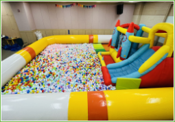
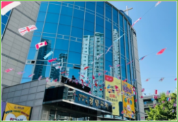
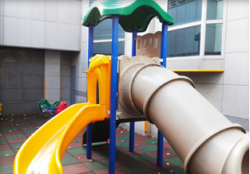

HOME / 교제와 섬김 / 관리(시설/차량)
관리(시설/차량)
GWANG MYEONG
관리(시설/차량)
시설관리는 온 성도가 하나님을 예배하고 성도들의 상호간 교제와 신실한 성도로 성장하도록 양육 받는 하나님의 임재의 장소이므로 항상 온전하고 청결하고 질서 있게 관리하는데 가치를 둔다.



차량관리는 효율적인 주차안내와 예배전 후의 원활한 차량이동을 통해 성도들에게 편의를 제공하고 교회셔틀 차량을 운행하여 예배의 자리로 나오는데 불편함이 없도록 한다